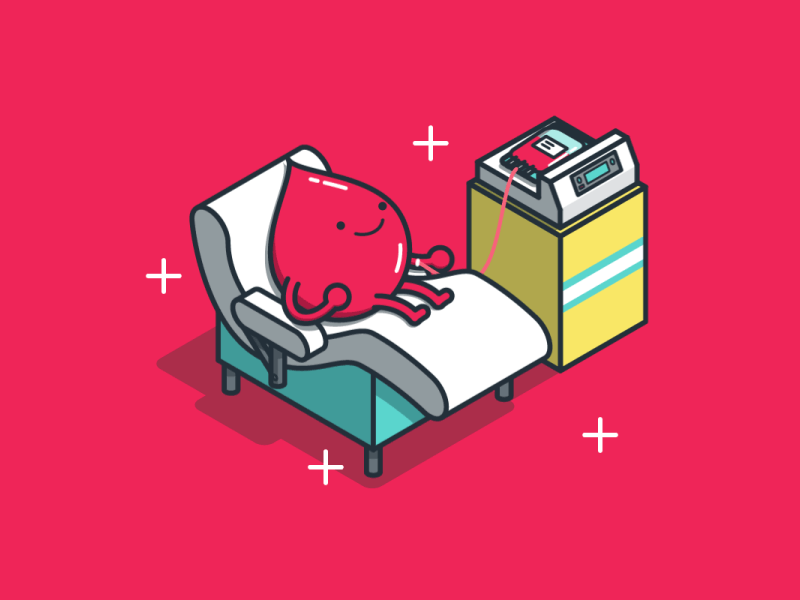
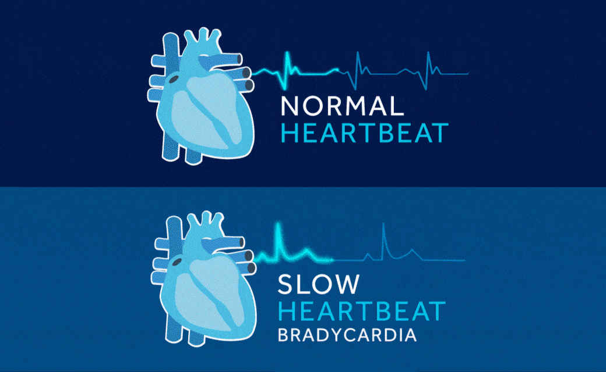

A blood transfusion provides blood or blood components if you've lost blood due to an injury, during surgery, or have certain medical conditions that affect blood or its components. The blood typically comes from donors. Blood banks and healthcare providers ensure transfusions are a safe, low-risk treatment.
A blood transfusion is a common procedure in which donated blood or blood components are given to you through an intravenous line (IV). A blood transfusion is given to replace blood and blood components that may be too low.

Which diseases need a blood transfusion?
Following diseases may require a blood transfusion therapy:
- Anemia
- Cancer
- Hemophilia
- Kidney Disease
- Liver Disease
- Severe Infection
- Sickle Cell Disease
- Thrombocytopenia
Strategies to prevent heart diseases

- Don't smoke or use tobacco
- Get moving: Aim for at least 30 to 60 minutes of activity daily
- Eat a heart-healthy diet
- Maintain a healthy weight
- Get quality sleep
- Manage stress
- Get regular health screening tests
- Take steps to prevent infections